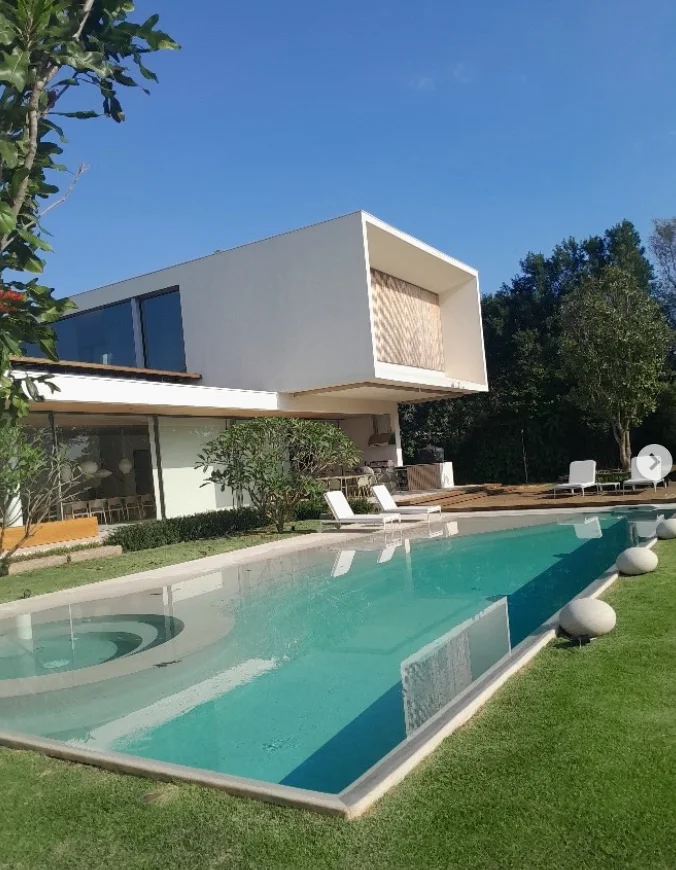

Avaliação
estrutural
Avaliação das condições estruturais do imóvel. Apresente sua demanda para definir o escopo do atendimento com a equipe.
Conversar sobre avaliaçãoMOTA BELTRAME · SÃO PAULO
Avaliação estrutural e construção civil para o seu imóvel. Da primeira conversa ao próximo passo da sua obra.
Solicitar orçamentoAtendimento no estado de São Paulo

CONSTRUÇÃO CIVILEspaços para viver.01 / A EMPRESA
Somos a Mota Beltrame, também presente como MB Construções Civis.
Atuamos com avaliação estrutural de imóveis e serviços de construção civil no estado de São Paulo, atendendo clientes residenciais, empresas e condomínios.
Cada demanda tem um ponto de partida. Conte o que você precisa avaliar, construir ou transformar para conversarmos sobre o seu projeto.
Conheça nosso Instagram02 / O QUE FAZEMOS
Da avaliação do imóvel à execução da obra, converse com a nossa equipe sobre a sua necessidade.
Avaliação das condições estruturais do imóvel. Apresente sua demanda para definir o escopo do atendimento com a equipe.
Conversar sobre avaliaçãoServiços de construção civil para imóveis residenciais, empresas e condomínios. Conte qual obra você pretende realizar.
Falar sobre minha obraTransformações de ambientes e execução de acabamentos. Veja na galeria registros de pisos, decks e intervenções em imóveis.
Planejar minha reforma03 / OBRAS E DETALHES
Registros de diferentes ambientes e etapas de obra. Selecione uma foto para ver os detalhes.
VAMOS CONVERSAR SOBRE O SEU PROJETO
Envie a cidade do imóvel, o serviço desejado e uma breve descrição do que você precisa. Se tiver fotos, compartilhe na conversa.
Solicitar orçamento pelo WhatsApp